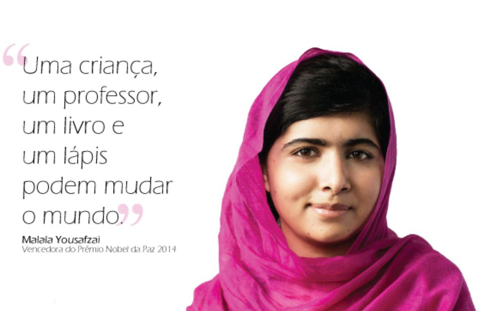
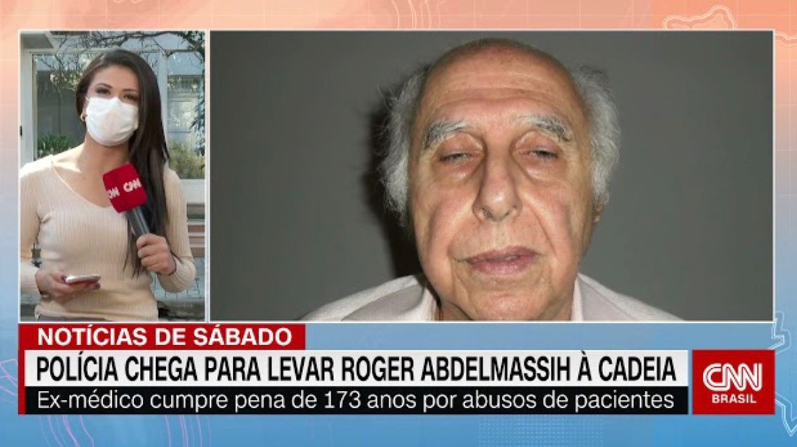
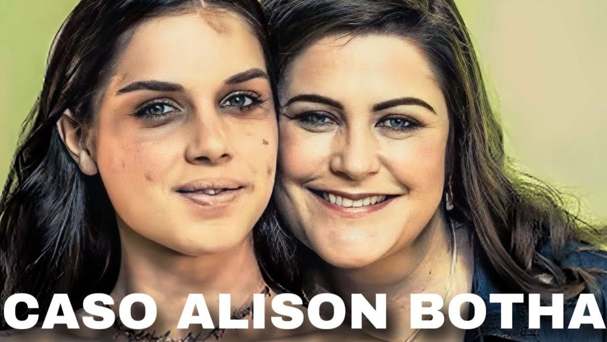

Por trás de cada comentário, existe uma pessoa. Por trás de cada caso, existe uma vida. Criamos este mural para dar voz a quem muitas vezes precisou se calar. O que você vai ler aqui são relatos verdadeiros, cheios de dor, superação e coragem.
HISTORIAS

MALALA YOUSAFZAI
Malala Yousafzai nasceu em 1997 no Paquistão. Desde pequena, seu pai, que era professor e dono de uma escola, ensinou a ela a importância de estudar. Onde ela morava, no Vale do Swat, um grupo extremista chamado Talibã tomou o controle e proibiu que as meninas fossem à escola. Malala, com apenas 11 anos, não aceitou e começou a escrever um blog secreto para a BBC, contando o medo que sentia e defendendo o direito das meninas de estudarem. Por causa disso ela ficou conhecida no mundo todo, e o Talibã a considerou uma inimiga. Em 9 de outubro de 2012, quando tinha 15 anos, ela foi atacada dentro do ônibus da escola e levou um tiro na cabeça. Malala sobreviveu, foi levada para um hospital na Inglaterra e se recuperou. Em vez de se calar com medo, ela ficou ainda mais forte e passou a lutar pelos direitos de todas as crianças. Em 2014, aos 17 anos, ela se tornou a pessoa mais jovem da história a ganhar o Prêmio Nobel da Paz. E como ela mesma disse: "Uma criança, um professor, um livro e um lápis podem mudar o mundo."

CASO ROGER
Roger Abdelmassih era um médico muito famoso e respeitado no Brasil, especialista em reprodução humana. Ele era dono de uma clínica de fertilização em uma área nobre de São Paulo e foi responsável pelo nascimento de milhares de bebês. Chegou até a ser homenageado pela Câmara. Por trás dessa fama, ele cometia crimes dentro da própria clínica. Entre 1995 e 2008, ele abusou de dezenas de pacientes que procuravam tratamento para engravidar. As vítimas eram mulheres que estavam vulneráveis, muitas sob efeito de sedação usada para a retirada de óvulos. As primeiras denúncias apareceram em 2008, feitas por uma ex-funcionária, e em 2009 o caso explodiu na mídia nacional quando várias pacientes procuraram a polícia. Em 2010 ele foi condenado pela primeira vez a 278 anos de prisão por estupro e atentado violento ao pudor, a maior condenação da história do Brasil na época. Depois de recursos a pena foi reduzida para 181 anos de prisão por 37 estupros. Em 2011 ele teve o registro de médico cassado. Antes de ser preso, em 2011, ele fugiu do Brasil e ficou 3 anos foragido. Foi encontrado em 2014 no Paraguai, vivendo com a família, em uma operação da Polícia Federal com a Interpol. Desde então ele está preso. Na foto que você mandou é o momento em 2020 em que a polícia foi levá-lo de volta para a cadeia após ele ter conseguido prisão domiciliar por motivos de saúde. Por causa da gravidade, a imprensa chamou o caso de "De médico e de monstro".

MARIA DA PENHA
Maria da Penha Maia Fernandes é uma farmacêutica cearense, nascida em Fortaleza em 1945. Em 1974 ela se casou com o professor universitário colombiano Marco Antonio Heredia Viveros. No começo o casamento parecia normal, mas depois ele começou a ser muito agressivo. Em 1983 aconteceram as duas tentativas de assassinato: 1. A primeira: Enquanto ela dormia, ele atirou nas costas dela com uma espingarda. Maria sobreviveu, mas ficou paraplégica - nunca mais voltou a andar. 2. A segunda: Quando ela voltou do hospital e ainda estava se recuperando, ele tentou eletrocutá-la no chuveiro. Maria denunciou, mas o Brasil não fez justiça. O marido foi julgado duas vezes e nos dois julgamentos conseguiu sair livre, por causa de recursos dos advogados. Ela ficou 19 anos esperando por justiça, sem nenhuma resposta. Como a justiça brasileira não a ajudava, em 1998 ela denunciou o Brasil para a Comissão Interamericana de Direitos Humanos (da OEA). Em 2001, a Comissão condenou o Brasil por ser omisso e tolerante com a violência contra a mulher. Por causa dessa condenação internacional, o Brasil foi obrigado a criar uma lei. Assim, em 7 de agosto de 2006, foi criada a Lei nº 11.340 - a Lei Maria da Penha, considerada pela ONU uma das 3 melhores leis do mundo para proteger as mulheres. A lei tornou mais rigorosa a punição para quem agride, protege a mulher e cria medidas como a proibição do agressor se aproximar da vítima. Hoje, Maria da Penha é um símbolo da luta contra a violência doméstica.

ELIZA SAMUDIO
Eliza Silva Samudio era uma jovem de 25 anos, modelo, que morava no interior de São Paulo. Ela teve um relacionamento com o goleiro Bruno Fernandes, que na época era ídolo do Flamengo e goleiro da Seleção Brasileira. Em 2009, Eliza engravidou de Bruno. Ela conta que ele não queria assumir a criança e pediu para ela fazer aborto, mas ela não aceitou. O filho nasceu, o Bruninho, em fevereiro de 2010. Eliza então foi à Justiça para pedir pensão alimentícia e reconhecimento da paternidade. Em junho de 2010, Eliza desapareceu. Segundo as investigações da polícia de Minas Gerais, Bruno atraiu Eliza para o sítio dele em Esmeraldas (MG) dizendo que iria conversar sobre a pensão. No sítio, ela foi mantida em cárcere privado, agredida e assassinada. O crime foi cometido com a ajuda de amigos de Bruno, entre eles Luiz Henrique Ferreira Romão, o Macarrão, e o ex-policial Marcos Aparecido dos Santos, o Bola. O corpo de Eliza nunca foi encontrado até hoje. Segundo a denúncia do Ministério Público, após o crime o corpo foi esquartejado e depois ocultado - o Bola teria jogado os restos para cães. Bruno foi preso em 2010. Em 2013, ele foi condenado a 22 anos e 3 meses de prisão por homicídio, sequestro e ocultação de cadáver. Macarrão e Bola também foram condenados. O filho de Eliza, Bruninho, hoje mora com a avó materna.

ALISON BOTHA
Alison Botha era uma jovem de 27 anos que morava em Port Elizabeth, na África do Sul. Ela levava uma vida normal, trabalhava em seguros e gostava de viajar. Na noite de 18 de dezembro de 1994, quando voltava para casa de carro, ela foi abordada por dois homens, Frans du Toit e Theuns Kruger. Eles entraram no carro dela e a obrigaram a dirigir para uma área deserta. Lá, eles cometeram violências terríveis contra ela. A deixaram desacordada, com muitos ferimentos de faca, e foram embora achando que ela estava morta. Mesmo com ferimentos gravíssimos e muito machucada, Alison não desistiu. Ela conseguiu se levantar e se arrastou até a estrada para pedir ajuda. Um estudante de veterinária que passava de carro a encontrou e a levou para o hospital. Os médicos disseram que foi um milagre ela ter sobrevivido. Os dois agressores foram presos e condenados à prisão perpétua em 1995. Depois de se recuperar, Alison se tornou uma palestrante motivacional muito conhecida no mundo. Ela escreveu dois livros e dá palestras sobre superação, coragem e como recomeçar depois de um trauma. Ela virou um símbolo de força e sobrevivência.
Que a memória desses relatos sirva como alerta, acolhimento e força para que nenhuma mulher precise caminhar sozinha.